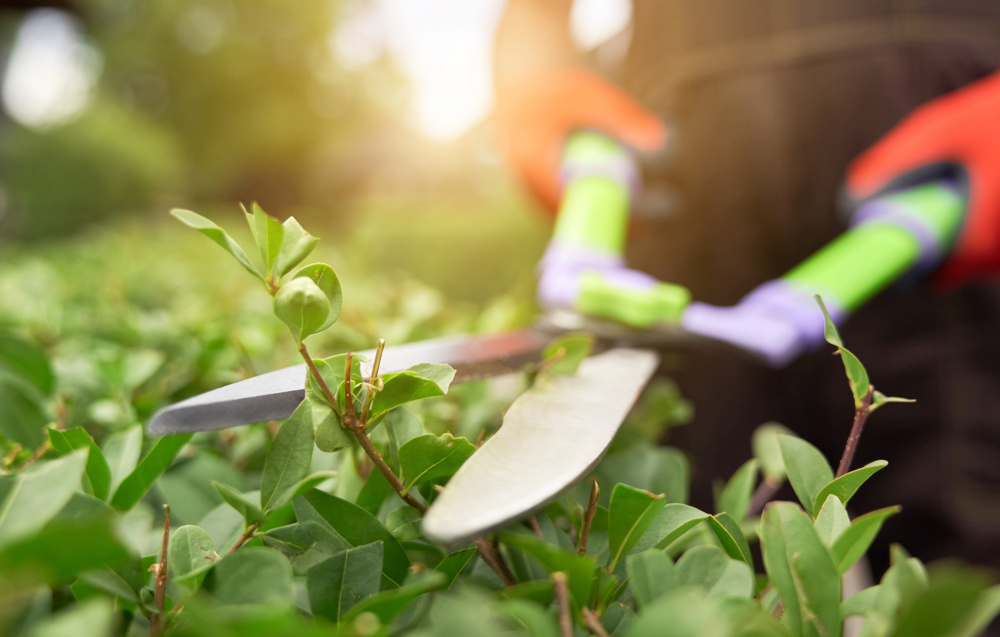

Локации по предоставлению услуг: Бар, Шушань, Сутоморе, Петровац, Будва, Подгорица
🌿 Услуги садовника

1. Уход за растениями
Посадка деревьев, кустарников, цветов, газонной травы.
Полив растений (ручной, капельный, автоматический).
Внесение удобрений (органических и минеральных).
Обрезка и формирование кроны деревьев и кустарников.
Удаление сухих и поврежденных ветвей.
2. Борьба с вредителями и болезнями Обработка растений от вредителей и заболеваний (опрыскивание, использование биопрепаратов). Установка ловушек для насекомых и грызунов. Применение профилактических мер для защиты растений.
3. Работы с газоном Стрижка газона (с помощью газонокосилки, триммера). Аэрация и скарификация почвы (улучшение воздухообмена корневой системы). Подсеивание и обновление газонного покрытия. Борьба с сорняками.
4. Ландшафтные работы Создание клумб, цветников, живых изгородей. Оформление декоративных элементов (альпийские горки, пруды, водоемы, дорожки). Укладка мульчи для улучшения почвы и сохранения влаги. Организация системы капельного орошения.
5. Осенне-зимние работы Подготовка растений к зиме (укрытие, утепление корней, побелка стволов). Очистка территории от листьев и сухих растений. Обслуживание теплиц (проветривание, подготовка грунта). Весенний запуск садовых систем после зимовки.
6. Прочие работы Уход за садовой мебелью и инвентарем. Контроль работы систем полива и дренажа. Планирование посадок и подбор растений с учетом климата.
2. Борьба с вредителями и болезнями Обработка растений от вредителей и заболеваний (опрыскивание, использование биопрепаратов). Установка ловушек для насекомых и грызунов. Применение профилактических мер для защиты растений.
3. Работы с газоном Стрижка газона (с помощью газонокосилки, триммера). Аэрация и скарификация почвы (улучшение воздухообмена корневой системы). Подсеивание и обновление газонного покрытия. Борьба с сорняками.
4. Ландшафтные работы Создание клумб, цветников, живых изгородей. Оформление декоративных элементов (альпийские горки, пруды, водоемы, дорожки). Укладка мульчи для улучшения почвы и сохранения влаги. Организация системы капельного орошения.
5. Осенне-зимние работы Подготовка растений к зиме (укрытие, утепление корней, побелка стволов). Очистка территории от листьев и сухих растений. Обслуживание теплиц (проветривание, подготовка грунта). Весенний запуск садовых систем после зимовки.
6. Прочие работы Уход за садовой мебелью и инвентарем. Контроль работы систем полива и дренажа. Планирование посадок и подбор растений с учетом климата.
🏠 Разнорабочие услуги
1.Строительные и ремонтные работы
Подготовка стройплощадки (уборка мусора, разгрузка стройматериалов).
Земляные работы (копка траншей, ям, выемка грунта, планировка территории).
Бетонирование (подготовка смеси, заливка, выравнивание).
Монтаж и демонтаж конструкций (перегородок, лесов, опалубки).
Покрасочные и штукатурные работы (нанесение грунтовки, шпаклевки).
2. Грузоподъемные и складские работы Разгрузка и погрузка товаров, стройматериалов, мебели. Перемещение и складирование грузов. Упаковка и комплектование заказов. Работа с рохлями, тележками, погрузчиками (если есть навыки).
3. Производственные работы Работа на конвейере или станках (сортировка, упаковка, сборка деталей). Обслуживание оборудования (заправка, смазка, чистка). Контроль качества продукции.
4. Сельскохозяйственные работы Посадка, полив, прополка и сбор урожая. Уход за животными, уборка помещений. Работа в теплицах (пересадка, обрезка, удобрение растений).
5. Уборка и вспомогательные работы Поддержание чистоты на объектах. Уборка строительного и бытового мусора. Чистка и техническое обслуживание инструментов и инвентаря
2. Грузоподъемные и складские работы Разгрузка и погрузка товаров, стройматериалов, мебели. Перемещение и складирование грузов. Упаковка и комплектование заказов. Работа с рохлями, тележками, погрузчиками (если есть навыки).
3. Производственные работы Работа на конвейере или станках (сортировка, упаковка, сборка деталей). Обслуживание оборудования (заправка, смазка, чистка). Контроль качества продукции.
4. Сельскохозяйственные работы Посадка, полив, прополка и сбор урожая. Уход за животными, уборка помещений. Работа в теплицах (пересадка, обрезка, удобрение растений).
5. Уборка и вспомогательные работы Поддержание чистоты на объектах. Уборка строительного и бытового мусора. Чистка и техническое обслуживание инструментов и инвентаря
🔨 Мелкий технический ремонт

1.Устранение протечек (замена прокладок, уплотнителей).
Прочистка засоров в трубах и сифонах.
Ремонт и замена смесителей, кранов, гибких шлангов.
Установка и подключение стиральных и посудомоечных машин.
Замена или ремонт сливных бачков унитазов.
2. Электротехнические работы Замена и ремонт розеток, выключателей, автоматов защиты. Установка и подключение осветительных приборов (люстр, бра, светильников). Монтаж электропроводки (в пределах несложных задач). Проверка и замена предохранителей.
3. Столярные и слесарные работы Ремонт и регулировка дверей, замков, ручек, петель. Установка и ремонт мебели (сборка шкафов, стеллажей, комодов). Монтаж карнизов, полок, крючков, зеркал. Ремонт и укрепление деревянных конструкций (столы, стулья, кровати).
4. Отделочные и малярные работы Подклейка и ремонт обоев. Закрашивание небольших сколов и трещин на стенах. Покраска дверей, оконных рам, плинтусов. Замена и установка плитки (небольшие объемы работ).
5. Прочие бытовые работы Установка и крепление бытовой техники (телевизоры, водонагреватели). Замена и регулировка оконных уплотнителей. Устранение мелких дефектов интерьера. Монтаж простых конструкций (жалюзи, москитные сетки).
2. Электротехнические работы Замена и ремонт розеток, выключателей, автоматов защиты. Установка и подключение осветительных приборов (люстр, бра, светильников). Монтаж электропроводки (в пределах несложных задач). Проверка и замена предохранителей.
3. Столярные и слесарные работы Ремонт и регулировка дверей, замков, ручек, петель. Установка и ремонт мебели (сборка шкафов, стеллажей, комодов). Монтаж карнизов, полок, крючков, зеркал. Ремонт и укрепление деревянных конструкций (столы, стулья, кровати).
4. Отделочные и малярные работы Подклейка и ремонт обоев. Закрашивание небольших сколов и трещин на стенах. Покраска дверей, оконных рам, плинтусов. Замена и установка плитки (небольшие объемы работ).
5. Прочие бытовые работы Установка и крепление бытовой техники (телевизоры, водонагреватели). Замена и регулировка оконных уплотнителей. Устранение мелких дефектов интерьера. Монтаж простых конструкций (жалюзи, москитные сетки).
🔧 Сантехнические работы

1.Монтаж сантехнических систем:
Ремонт трубопроводов для воды.
Монтаж канализационных систем.
Подключение сантехнического оборудования (унитазов, раковин, ванн, душевых кабин, смесителей и т. д.).
2.Ремонт и техническое обслуживание: Поиск и устранение протечек. Замена или ремонт труб и фитингов. Очистка засоров в канализации. Обслуживание отопительных систем (замена радиаторов, очистка котлов).
3.Диагностика и профилактика: Проверка давления в трубах. Тестирование герметичности соединений. Очистка фильтров и клапанов.
4.Работа с инженерными системами: Установка бойлеров, водонагревателей, насосов. Монтаж и регулировка систем теплого пола. Установка фильтров для воды.
5.Аварийные вызовы: Устранение аварийных протечек. Прочистка засоров, восстановление работоспособности системы.
2.Ремонт и техническое обслуживание: Поиск и устранение протечек. Замена или ремонт труб и фитингов. Очистка засоров в канализации. Обслуживание отопительных систем (замена радиаторов, очистка котлов).
3.Диагностика и профилактика: Проверка давления в трубах. Тестирование герметичности соединений. Очистка фильтров и клапанов.
4.Работа с инженерными системами: Установка бойлеров, водонагревателей, насосов. Монтаж и регулировка систем теплого пола. Установка фильтров для воды.
5.Аварийные вызовы: Устранение аварийных протечек. Прочистка засоров, восстановление работоспособности системы.